| 日付 | 2024年7月21日（日） |
|---|---|
| メンバー | 家族（長女・13歳） |
| アクセス | 電車 |
子供たちの夏休みが始まった。
息子はスポーツやら塾やらで忙しいのだが、娘はどこにも行く予定がなく、
どこにも出かけないのもかわいそうなので、東京スカイツリーに連れ出すことにする。
押上駅を降りると、もうそこは東京スカイツリーの入口だ。
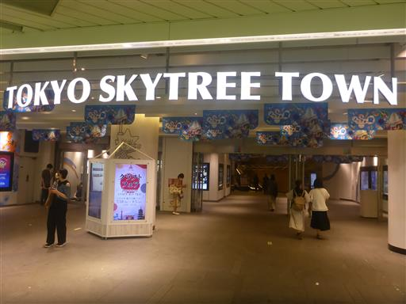
足元から東京スカイツリーを見上げる。
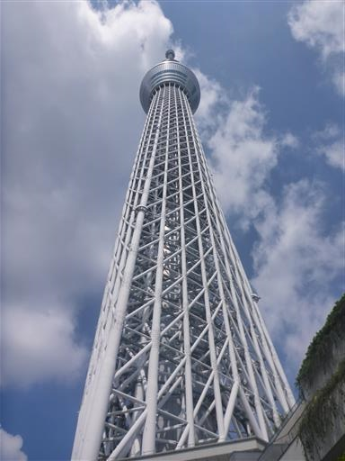
展望デッキへの道順は結構不案内で、ちょっと迷いながら到着。
エレベーターは4基あり、どのエレベーターに乗れるかは運次第。
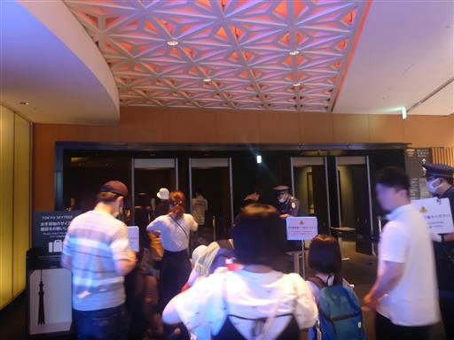
登りで乗ったエレベータは「冬」仕様。
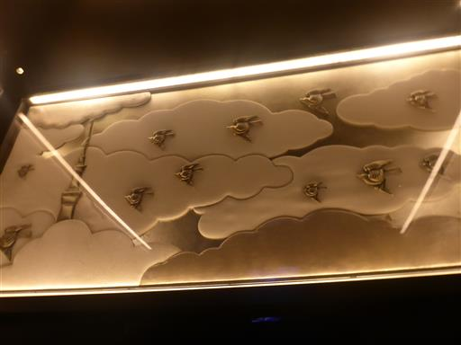
展望デッキに到着。
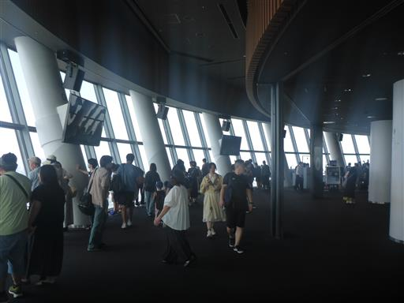
東京の街を見下ろす。標高350m。
10階建て程度のビルは米粒のように小さい。
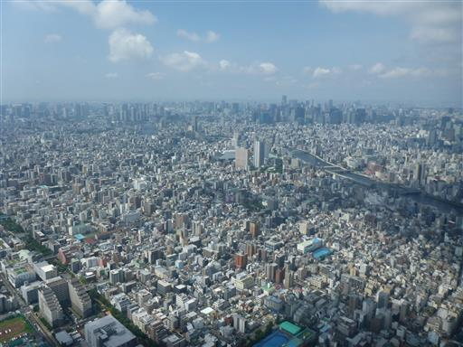
都心の高層ビル群。左に東京タワー、右に六本木ヒルズが見える。
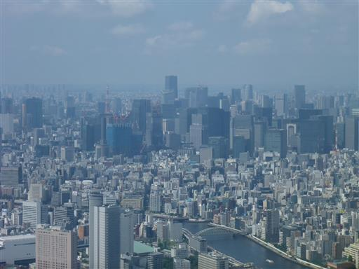
こちらは東京湾。晴れてはいるのだが霞んでいて、
残念ながら丹沢をはじめとする山々は何も見えなかった。
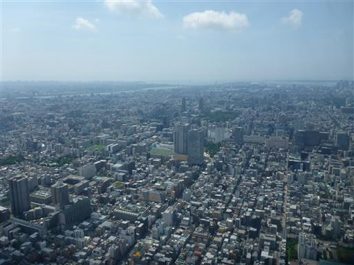
ガラス床。真下を見下ろせる。
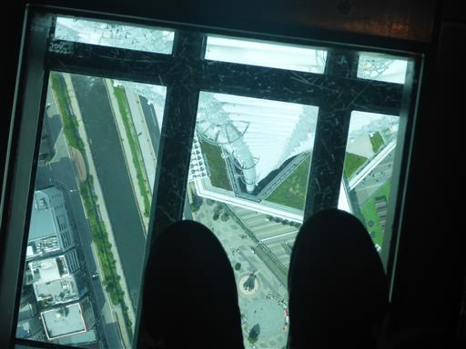
さらに100m高い展望回廊は昨日時点ですでに売り切れで購入できなかった。
1時間ほど景色を堪能したら、再びエレベータに乗って降る。
降りのエレベーターは「春」仕様だ。
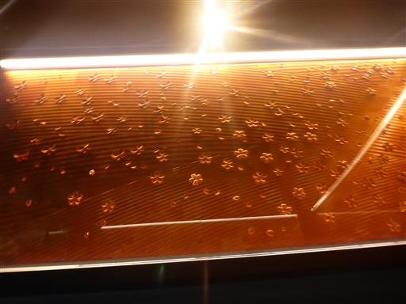
炎天下の中、隅田川を渡って浅草寺に向かう。
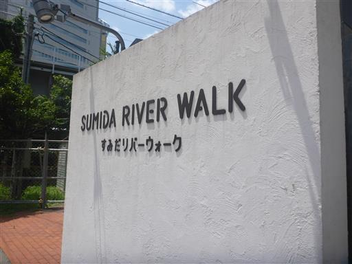
立派な水門。
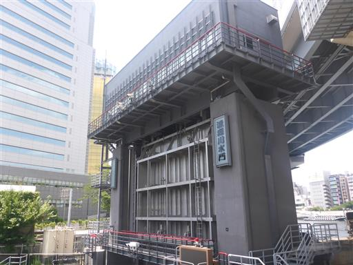
隅田川を渡る。
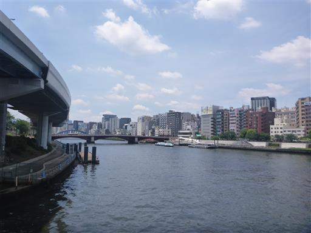
振り返るとスカイツリーが天高く聳えている。
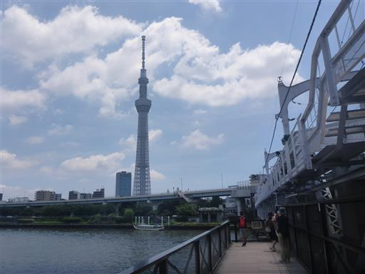
昼食をとって、浅草寺の門前町に到着。土産物屋が軒を連ねている。
娘はウィンドウショッピングが好きで、次々と店に入って商品を眺めている。
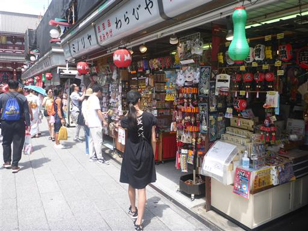
宝蔵門。巨大な提灯が目立つ。
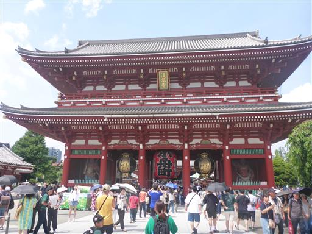
五重塔。
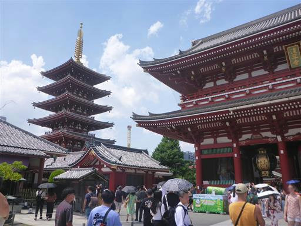
そして本堂に到着。
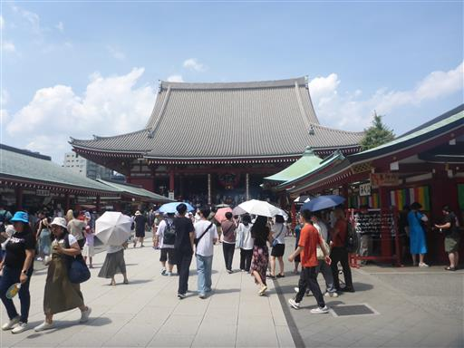
こちらにも巨大な提灯が下がっている。
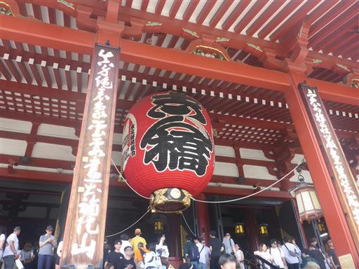
内部の様子。写真撮影は禁止されていなさそうだ。
建物の歴史がある訳ではないのだが、東京を代表する観光地でありものすごく活気がある。
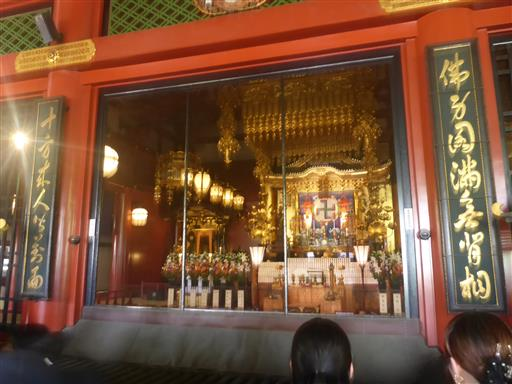
冷気が出ていて涼しい。「おーいお茶」の宣伝になっている。
面白い工夫だ。
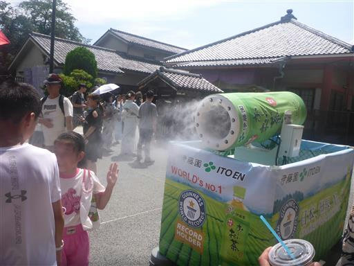
仲見世通りを端まで歩く。感覚的には半分以上が外国人だ。

そしてその先にあるのが有名な雷門。猛暑なのにすごい賑わいだ。
仲見世通りでお土産を買って帰宅する。久々の東京観光だった。
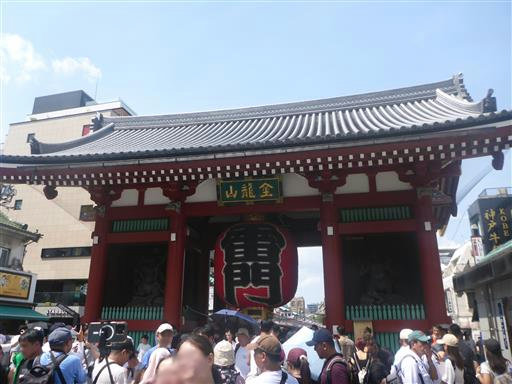